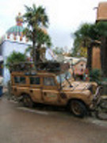
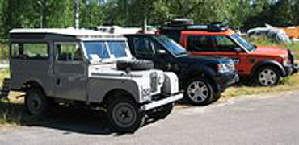
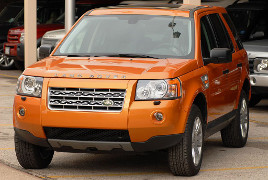
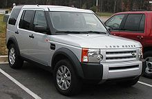

leur tous premier land rover defender
  Land Rover Freelander 2008
Land Rover Discovery 2005
Land Rover est une marque automobile britannique spécialisée dans les véhicules tout-terrain et SUV. Elle a été fondée par Rover, qui a disparu en 2005. Les premiers véhicules nommés Land Rover ont été construits pendant l'été 1947. Le Land Rover est de conception simple et robuste, apte à rouler dans des environnements exigeants. Ce véhicule a été nommé pendant plusieurs années comme étant "La reine des 4X4". La marque appartient au constructeur indien Tata Motors depuis mars 2008, après avoir été rachetée par BMW en 1994 puis par Ford en 2000. Les ventes du constructeur en 2013 atteignent 348 338 unités, en croissance de 15% par rapport à 2012. 1948 1994 : Reprise par BMW 2000 : Rachat par Ford 2008 : Rachat par Tata Motors Le 26 mars 2008, le constructeur automobile américain Ford annonce la vente de Jaguar et Land Rover à Tata Motors1. Le prix de vente communiqué officiellement est de 2,3 milliards de dollars. Septembre 2008 : arrêt de la construction de l'usine de Singur, près de Calcutta, où devaient être produits les modèles Tata Nano, à la suite de manifestations d'agriculteurs et de militants politiques. 18 décembre 2008 : Tata signe un contrat avec la Scuderia Ferrari. Ce contrat annonce la fourniture de logiciels, mais aussi ce sera la première fois que le logo d'une marque indienne apparait sur la carrosserie de la F2009. Janvier 2009 : suppression de 450 postes chez Jaguar-Land Rover en raison de la chute des ventes des véhicules de luxe. Octobre 2009 : Tata Motors rachète le constructeur d'autobus espagnol Hispano. 2013 : Avant la fin de l'année, et après 5 ans de tests et de validation du concept, Tata Motors doit lancer, en Inde, les premiers véhicules, au monde, à rouler à l'air compressé (moteurs conçus par la société française MDI) et baptisés " Mini CAT ". Le 26 janvier 2014, son PDG Karl Slym est retrouvé mort dans un palace thaïlandais.